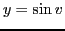

Next: Differentiation of Up: Rules for differentiating standard Previous: Examples Contents Index
Let
.
By General Rule, §4.7, considering  as the independent variable, we have
as the independent variable, we have
Since  is a function of
is a function of  and it is required to differentiate
and it is required to differentiate  with respect to
with respect to  ,
we must use formula (A), §5.11, for differentiating a function of a function, namely,
,
we must use formula (A), §5.11, for differentiating a function of a function, namely,
The statement of the corresponding rules will now be left to the student.